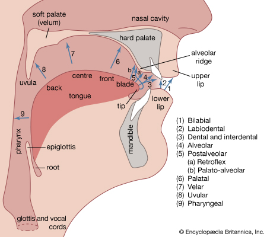
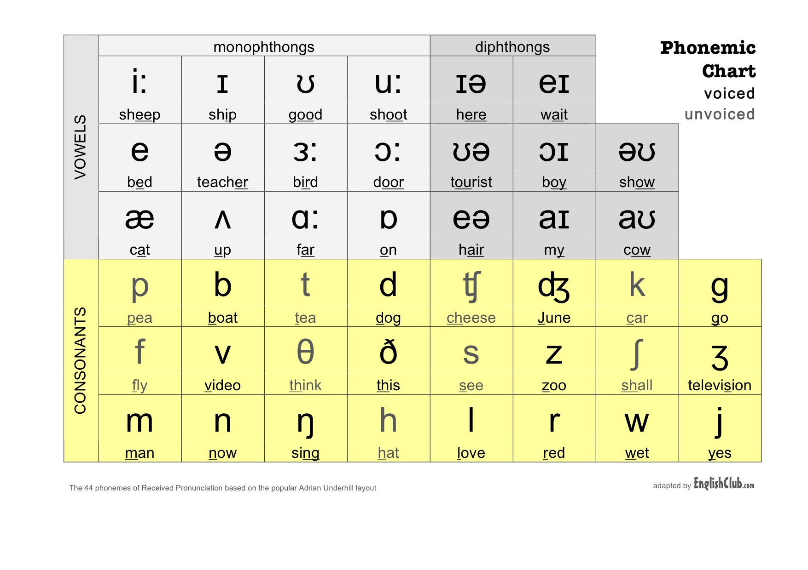
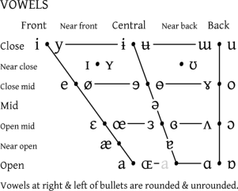
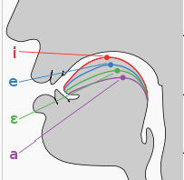

| A/ei | B/bi | C/si | D/di | E/i | F/if |
| G/ji | H/eic | I/ay | J/jei | K/kei | L/el |
| M/em | N/en | O/ow | P/pi | Q/qyu | R/ar |
| S/es | T/ti | U/yu | V/vi | W/dablyu | X/eks |
| Y/wai | Z/zed/zi |
 
Lax: Short/pendek
| Simbol | Cara baca | Contoh kata |
| I | Hampir mirip seperti:sate | Hymn, kit, bid, minute |
| e | Hampir mirip seperti: ember atau bebek | Bed, head, dress |
| D | A ditambah sedikit O | Odd, Wash, lot |
| ʌ | Seperti ə + ɑː | Mud, love, blood |
| ʊ | Seperti ə +u | Good, foot |
| ɜː | Seperti ə + r | Stir, learn, nurse, refer |
| ə | Seperti mengucapkan jembatan | Common, standard, about |
Tense: Long/Panjang
| Simbol | Cara baca | Contoh kata |
| i: | i | Sea, machine, fleece |
| u: | u | Two, goose, group |
| ɑ: | a | Father, start |
| ɔ: | o | Law, war, north |
| eə | ea | Fair, various, square |
Diphthong: Suara lemas
| Simbol | Cara baca | Contoh kata |
| eI | ei | Break, face |
| aI | ai | High, price |
| əʊ | eu | Show, goat |
| aʊ | au | Now, mouth |
| ɔI | oi | Boy, choice |
| Iə | Iye | Near, here |
| eə | Eye | Fair, various |
| ʊə | Ue | Poor, cure |
Voiceless: cepat
| Simbol | Cara baca | Contoh kata |
| p | p | Copy, happen |
| t | t | Tea, button |
| k | k | Clock, school |
| tʃ | Che (pengucapan tebal) | Match, nature |
| f | f | Coffe, fat, fun |
| θ | Tsa | Author, thing |
| s | s | Soon, sister |
| ʃ | Syi | Ship, national |
| h | h | Whole, ahead |
Voiced: lebih lembut
| Simbol | Cara baca | Contoh kata |
| b | b | Back, job |
| d | d | Ladder, day |
| g | g | Ghost, gay, get |
| dӠ | Je (pengucapan tebal) | Age, soldier |
| v | v | Heavy, view |
| ð | dja | Other, smooth |
| z | z | Zero, buzz |
| Ӡ | Z+h | Vision, pleasure |
| m | m | Sum, hammer |
| n | n | Know, funny |
| ŋ | ng | Anger, ring, sing |
| l | l | Feel, light |
| r | r | Right, sorry |
| j | y | Use, yet |
| w | w | When, wet |
 